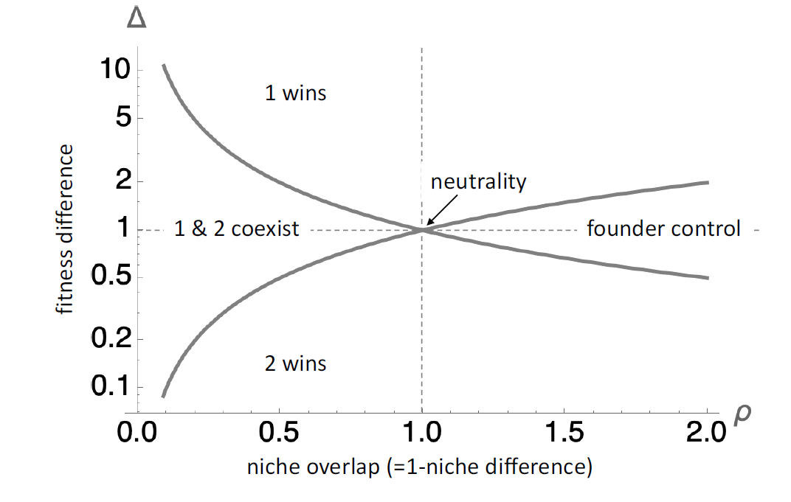

# Define the model
Sim_lotka_volterra <- function(tt, alpha11, alpha12, alpha21, alpha22, r1, r2, N10, N20) {
N1 <- c(N10)
N2 <- c(N20)
for(ti in 1:tt){
dN1 <- (r1 - alpha11 * N1[ti] - alpha12 * N2[ti]) * N1[ti]
dN2 <- (r2 - alpha21 * N1[ti] - alpha22 * N2[ti]) * N2[ti]
N1 <- c(N1, N1[ti] + dN1)
N2 <- c(N2, N2[ti] + dN2)
}
return(data.frame(N1 = N1, N2 = N2))
}Two-species Lotka-Volterra competition model and the modern coexistence theory are discussed.
Two-species Lotka-Volterra competition model
The two-species Lotka-Volterra competition model is defined as
\[ \begin{aligned} \frac{dN_1}{dt} &= \left(r_1 - \alpha_{11} N_1 - \alpha_{12} N_2\right) N_1 \\ \frac{dN_2}{dt} &= \left(r_2 - \alpha_{21} N_1 - \alpha_{22} N_2\right) N_2 \end{aligned} \]
where \(N_1\) and \(N_2\) are the population sizes of species 1 and 2, respectively, \(r_1\) and \(r_2\) are the intrinsic growth rates, and \(\alpha_{ij}\)s are the competition coefficients.
Five types of outcomes are possible:
Case 1: Species 1 wins
If \(r_1 / \alpha_{11} > r_2 / \alpha_{21}\) and \(r_1 / \alpha_{12} > r_2 / \alpha_{22}\), species 1 will win. The ecosystem will reach equilibrium at \((r_1 / \alpha_{11}, 0)\).
Case 2: Species 2 wins
If \(r_1 / \alpha_{11} < r_2 / \alpha_{21}\) and \(r_1 / \alpha_{12} < r_2 / \alpha_{22}\), species 2 will win. The ecosystem will reach equilibrium at \((0, r_2 / \alpha_{22})\).
Case 3: Coexistence
If \(r_1 / \alpha_{11} < r_2 / \alpha_{21}\) and \(r_1 / \alpha_{12} > r_2 / \alpha_{22}\), the two species will coexist. The equilibrium point is given by the solution of the following equations:
\[ r_1 - \alpha_{11} N_1 - \alpha_{12} N_2 =0 \\ r_2 - \alpha_{21} N_1 - \alpha_{22} N_2 =0 \]
Case 4: Founder control
If \(r_1 / \alpha_{11} > r_2 / \alpha_{21}\) and \(r_1 / \alpha_{12} < r_2 / \alpha_{22}\), the species with a larger density at the initial stage will win. The ecosystem will reach equilibrium at the corresponding species’ equilibrium point.
Case 5: Neutrality
If the two species share all parameters, their zero-net-population-isoclines (ZNGIs) are overlapping.
The phase-plane analysis
The zero-net growth isoclines are given by:
\[ \begin{aligned} \frac{dN_1}{dt} &= 0 \Rightarrow N_1 = \frac{\left(r_1 - \alpha_{12} N_2\right)}{\alpha_{11}} \\ \frac{dN_2}{dt} &= 0 \Rightarrow N_2 = \frac{\left(r_2 - \alpha_{21} N_1\right)}{\alpha_{22}} \end{aligned} \]
Plot the isoclines in the phase plane.
The equilibrium points are the intersection of the isoclines.
#| standalone: true
#| viewerHeight: 700
#| viewerWidth: 1000
library(shiny)
library(bslib)
library(plotly)
library(Matrix)
Sim_lotka_volterra <- function(tt, alpha11, alpha12, alpha21, alpha22, r1, r2, N10, N20) {
N1 <- c(N10)
N2 <- c(N20)
for(ti in 1:tt){
dN1 <- (r1 - alpha11 * N1[ti] - alpha12 * N2[ti]) * N1[ti]
dN2 <- (r2 - alpha21 * N1[ti] - alpha22 * N2[ti]) * N2[ti]
N1 <- c(N1, N1[ti] + dN1)
N2 <- c(N2, N2[ti] + dN2)
}
return(data.frame(N1 = N1, N2 = N2))
}
# Define UI for app that draws a histogram ----
# Define UI for app that draws a histogram ----
ui <- fluidPage(
headerPanel(''),
fluidRow(
column(12,
textOutput("text"),
tags$head(tags$style("#text{color: black;
font-size: 30px;
font-style: italic;
}"
)
),
plotlyOutput("plot", width=860)
)
),
fluidRow(
column(4,
div(style="height: 80px;",sliderInput('r1', 'r1', 0.4, min = 0.1, max = 3)),
div(style="height: 80px;",sliderInput('r2', 'r2', 1.1, min = 0.1, max = 3))
),
column(4,
div(style="height: 80px;", sliderInput('alpha11', HTML("α<sub>11</sub>"), 1.5, min = 0.1, max = 5)),
div(style="height: 80px;",sliderInput('alpha12', HTML("α<sub>12</sub>"), 0.8, min = 0.1, max = 5))
),
column(4,
div(style="height: 80px;",sliderInput('alpha21', HTML("α<sub>21</sub>"), 0.9, min = 0.1, max = 5)),
div(style="height: 80px;",sliderInput('alpha22', HTML("α<sub>22</sub>"), 1.1, min = 0.1, max = 5))
)
)
)
server <- function(input, output, session) {
N1 <- seq(0, 20, 0.01)
N2_1 <-reactive({
(input$r1 - input$alpha11 * N1) / input$alpha12
})
N2_2 <- reactive({
(input$r2 - input$alpha21 * N1) / input$alpha22
})
# sim lv model
sim_result <- reactive({
Sim_lotka_volterra(100, input$alpha11, input$alpha12, input$alpha21, input$alpha22, input$r1, input$r2, 0.1, 0.1)
})
output$text <- renderText({
if(input$r1 / input$alpha11 > input$r2 / input$alpha21 & input$r1 / input$alpha12 > input$r2 / input$alpha22){HTML("Case 1: Species 1 wins")}
else if(input$r1 / input$alpha11 < input$r2 / input$alpha21 & input$r1 / input$alpha12 < input$r2 / input$alpha22){"Case 2: Species 2 wins"}
else if(input$r1 / input$alpha11 < input$r2 / input$alpha21 & input$r1 / input$alpha12 > input$r2 / input$alpha22){"Case 3: Coexistence"}
else if(input$r1 / input$alpha11 > input$r2 / input$alpha21 & input$r1 / input$alpha12 < input$r2 / input$alpha22){"Case 4: Founder control"}
else {"Case 5: Neutrality"}
})
output$plot <- renderPlotly({
Ns <- data.frame(N1 = N1, N2_1 = N2_1(), N2_2 = N2_2())
pos_Ns <- Ns[Ns$N2_1 >= 0 | Ns$N2_2 >= 0,]
x_lim <- c(0, max(pos_Ns$N1) + 1)
y_lim <- c(0, max(pos_Ns$N2_1, pos_Ns$N2_2)+1)
p <- plot_ly(x = N1, y = N2_1(), type = 'scatter', mode = 'lines', name = 'dN1/dt = 0') %>%
add_trace(x = N1, y = N2_2(), type = 'scatter', mode = 'lines', name = 'dN2/dt = 0') %>%
add_trace(x = -1, y = -1, type = 'scatter', mode = 'markers', name = 'Stable equilibrium point',
marker = list(color = 'rgb(0, 0, 0)', size = 10, line = list(color = 'rgb(0, 0, 0)',
width = 1
))) %>%
add_trace(x = -2, y = -1, type = 'scatter', mode = 'markers', name = 'Unstable equilibrium point',
marker = list(color = 'rgb(255, 255, 255)', size = 10, line = list(color = 'rgb(0, 0, 0)',
width = 1
))) %>%
add_trace(x = sim_result()$N1, y = sim_result()$N2, type = 'scatter', mode = 'lines+markers', name = 'Trajectory',
marker = list(color = 'grey'), line = list(color = 'grey')) %>%
add_trace(x = 0.1, y=0.1, type = 'scatter', mode = 'markers', name = 'Initial condition',
marker = list(color = 'rgb(0, 0, 0)', size = 5, line = list(color = 'rgb(0, 0, 0)',
width = 1
)))
if(input$r1 / input$alpha11 > input$r2 / input$alpha21 & input$r1 / input$alpha12 > input$r2 / input$alpha22){
p <- p %>%
add_trace(x = input$r1 / input$alpha11, y = 0, type = 'scatter', mode = 'markers', name = 'Stable equilibrium point',
marker = list(color = 'rgb(0, 0, 0)', size = 10, line = list(color = 'rgb(0, 0, 0)',
width = 1
)), showlegend = FALSE) %>%
add_trace(x = 0, y = input$r2 / input$alpha22, type = 'scatter', mode = 'markers', name = 'Unstable equilibrium point',
marker = list(color = 'rgb(255, 255, 255)', size = 10, line = list(color = 'rgb(0, 0, 0)',
width = 1
)), showlegend = FALSE) %>%
add_trace(x = 0, y = 0, type = 'scatter', mode = 'markers', name = 'Unstable equilibrium point',
marker = list(color = 'rgb(255, 255, 255)', size = 10, line = list(color = 'rgb(0, 0, 0)',
width = 1
)), showlegend = FALSE) %>%
layout(xaxis = list(title = 'N1', range = x_lim), yaxis = list(title = 'N2', range = y_lim))
} else if(input$r1 / input$alpha11 < input$r2 / input$alpha21 & input$r1 / input$alpha12 < input$r2 / input$alpha22){
p <- p %>%
add_trace(x = input$r1 / input$alpha11, y = 0, type = 'scatter', mode = 'markers', name = '',
marker = list(color = 'rgb(255, 255, 255)', size = 10, line = list(color = 'rgb(0, 0, 0)',
width = 1
)), showlegend = FALSE) %>%
add_trace(x = 0, y = input$r2 / input$alpha22, type = 'scatter', mode = 'markers', name = '',
marker = list(color = 'rgb(0, 0, 0)', size = 10, line = list(color = 'rgb(0, 0, 0)',
width = 1
)), showlegend = FALSE) %>%
add_trace(x = 0, y = 0, type = 'scatter', mode = 'markers', name = '',
marker = list(color = 'rgb(255, 255, 255)', size = 10, line = list(color = 'rgb(0, 0, 0)',
width = 1
)), showlegend = FALSE) %>%
layout(xaxis = list(title = 'N1', range = x_lim), yaxis = list(title = 'N2', range = y_lim))
} else if(input$r1 / input$alpha11 < input$r2 / input$alpha21 & input$r1 / input$alpha12 > input$r2 / input$alpha22){
sol <- reactive({solve(matrix(c(input$alpha11, input$alpha21, input$alpha12, input$alpha22), 2, 2), c(input$r1, input$r2))})
p <- p %>%
add_trace(x = sol()[1], y = sol()[2], type = 'scatter', mode = 'markers', name = '',
marker = list(color = 'rgb(0, 0, 0)', size = 10, line = list(color = 'rgb(0, 0, 0)',
width = 1
)), showlegend = FALSE) %>%
add_trace(x = input$r1 / input$alpha11, y = 0, type = 'scatter', mode = 'markers', name = '',
marker = list(color = 'rgb(255, 255, 255)', size = 10, line = list(color = 'rgb(0, 0, 0)',
width = 1
)), showlegend = FALSE) %>%
add_trace(x = 0, y = input$r2 / input$alpha22, type = 'scatter', mode = 'markers', name = '',
marker = list(color = 'rgb(255, 255, 255)', size = 10, line = list(color = 'rgb(0, 0, 0)',
width = 1
)), showlegend = FALSE) %>%
add_trace(x = 0, y = 0, type = 'scatter', mode = 'markers', name = '',
marker = list(color = 'rgb(255, 255, 255)', size = 10, line = list(color = 'rgb(0, 0, 0)',
width = 1
)), showlegend = FALSE) %>%
layout(xaxis = list(title = 'N1', range = x_lim), yaxis = list(title = 'N2', range = y_lim))
} else if(input$r1 / input$alpha11 > input$r2 / input$alpha21 & input$r1 / input$alpha12 < input$r2 / input$alpha22){
sol <- reactive({solve(matrix(c(input$alpha11, input$alpha21, input$alpha12, input$alpha22), 2, 2), c(input$r1, input$r2))})
p <- p %>%
add_trace(x = sol()[1], y = sol()[2], type = 'scatter', mode = 'markers', name = '',
marker = list(color = 'rgb(255, 255, 255)', size = 10, line = list(color = 'rgb(0, 0, 0)',
width = 1
)), showlegend = FALSE) %>%
add_trace(x = input$r1 / input$alpha11, y = 0, type = 'scatter', mode = 'markers', name = '',
marker = list(color = 'rgb(0, 0, 0)', size = 10, line = list(color = 'rgb(0, 0, 0)',
width = 1
)), showlegend = FALSE) %>%
add_trace(x = 0, y = input$r2 / input$alpha22, type = 'scatter', mode = 'markers', name = '',
marker = list(color = 'rgb(0, 0, 0)', size = 10, line = list(color = 'rgb(0, 0, 0)',
width = 1
)), showlegend = FALSE) %>%
add_trace(x = 0, y = 0, type = 'scatter', mode = 'markers', name = '',
marker = list(color = 'rgb(255, 255, 255)', size = 10, line = list(color = 'rgb(0, 0, 0)',
width = 1
)), showlegend = FALSE) %>%
layout(xaxis = list(title = 'N1', range = x_lim), yaxis = list(title = 'N2', range = y_lim))
} else {
p <- p %>%
layout(xaxis = list(title = 'N1', range = x_lim), yaxis = list(title = 'N2', range = y_lim))
}
p
})
}
# Create Shiny app ----
shinyApp(ui = ui, server = server)The stability of the equilibrium points
Consider a small perturbation from an equilibrium.
Calculate eigenvalues \(\lambda\) of Jacobian matrix \(J\) evaluated at an equilibrium \((N_1^*, N_2^*)\):
\[ J = \left.\begin{pmatrix} \frac{\partial f_1}{\partial N_1} & \frac{\partial f_1}{\partial N_2} \\ \frac{\partial f_2}{\partial N_1} & \frac{\partial f_2}{\partial N_2} \end{pmatrix}\right|_{(N_1^*, N_2^*)} \]
where \(f_1 = \left(r_1 - \alpha_{11} N_1 - \alpha_{12} N_2\right) N_1\) and \(f_2 = \left(r_2 - \alpha_{21} N_1 - \alpha_{22} N_2\right) N_2\). The eigenvalues of the Jacobian matrix determine the stability of the equilibrium points.
Stable equilibrium
If the eighenvalues have negative real parts, the equilibrium point is stable.
Unstable equilibrium
If any eighenvalue has positive real parts, the equilibrium point is unstable.
Stability analysis failure
If largest eigenvalue is 0, linear stability analysis fails (possibly neutral).
Invasion analysis
The invasion analysis is used to determine the outcome of the competition between two species.
If any species can invade a community when the other species is at equilibrium, the two species can stably coexist.
The invasion rate of Species \(i\) is defined as the per capita growth rate when rare while Species \(j\) is at equilibrium:
\[ \lambda_{ij} = \left.\frac{1}{N_i} \frac{dN_i}{dt}\right|_{N_j^*,N_i=0} \]
Species \(j\) reaches equilibrium at \(N_j^*=r_j / \alpha_{jj}\) on its own. So, the invasion rate of Species \(i\) yields:
\[ \lambda_{ij} = r_i - \frac{\alpha_{ij}}{\alpha_{jj}} r_j \]
So, the rule is to examine the sign of \(\lambda_{ij}\) and \(\lambda_{ji}\).
Case 1: Species 1 wins
If \(\lambda_{12} > 0\) and \(\lambda_{21} < 0\), species 1 outcompetes species 2.
Case 2: Species 2 wins
If \(\lambda_{12} < 0\) and \(\lambda_{21} > 0\), species 2 outcompetes species 1.
Case 3: Coexistence
If \(\lambda_{12} > 0\) and \(\lambda_{21} > 0\), the two species can stably coexist (“mutual invasibility”).
Case 4: Founder control
If \(\lambda_{12} < 0\) and \(\lambda_{21} < 0\), it is founder control.
Modern coexistence theory
Peter Chesson (e.g. 2000, 2020) developed the modern coexistence theory based on the Lotka-Volterra competition model. Two key concepts, niche differences and fitness differences, are derived from the invasion criterion.
Based on the invasion criterion, stable coexistence is achieved if and only if the two species are “mutually invasible”:
\[ \lambda_{12} > 0 \text{ and } \lambda_{21} > 0 \]
which are:
\[ r_1 - \frac{\alpha_{12}}{\alpha_{22}} r_2 > 0 \text{ and } r_2 - \frac{\alpha_{21}}{\alpha_{11}} r_1 > 0. \]
So,
\[ \frac{\alpha_{12}}{\alpha_{22}} < \frac{r_1}{r_2} < \frac{\alpha_{11}}{\alpha_{21}}. \]
After symmetrizing the inequality, we have
\[ \sqrt\frac{\alpha_{12}\alpha_{21}}{\alpha_{11}\alpha_{22}} < \sqrt\frac{\alpha_{12}\alpha_{22}}{\alpha_{11}\alpha_{21}} \frac{r_1}{r_2} < \sqrt\frac{\alpha_{11}\alpha_{22}}{\alpha_{12}\alpha_{21}} . \]
which can be simplified as
\[ \frac{1}{\rho} < \delta < \rho \]
where \(\rho = \sqrt\frac{\alpha_{11}\alpha_{22}}{\alpha_{12}\alpha_{21}}\) and \(\delta = \sqrt\frac{\alpha_{12}\alpha_{22}}{\alpha_{11}\alpha_{21}} \frac{r_1}{r_2}\).
\(\rho\) is then interpreted as the “niche overlap” and \(\delta\) as the “fitness difference”.
This crieteria then seperates the space of the niche overlap and fitness difference into four regions:

Lotka-Volterra competition model: Pros & Cons
Pros
Analytically tractable: The model is simple and can be solved analytically;
Graphical approach: Easy to do the graphical analysis based on the zero-net-growth isoclines;
Simple and clear outcomes of competition. For example, 5 outcomes of competition can be derived from two-species cases;
Phenomenological: The model can be used to describe the competition between two species in a simple way.
Cons
Linear competitive effects: higher order interactions are ignored;
No physical meaning to parameters: The parameters in the model have no physical meaning;
How does competitive outcome depend on environmental gradients? The analysis relies on constant parameters. Thus, the model is not suitable for studying the competition along environmental gradients;
Curse of dimensionality: The model and the analysis are not suitable for studying the competition among more than two species.
How are parameters related / constrained? The model does not provide any information on how the parameters are related or constrained.
References
Barabás G, D’Andrea R, Stump SM (2018) Chesson’s coexistence theory. Ecological Monographs 88: 277– 303.
Chesson P (2000) Mechanisms of maintenance of species diversity. Annual Review of Ecology, Evolution, and Systematics 31: 343–366
Chesson P (2020) Species coexistence. In: Theoretical Ecology. Oxford University Press, pp 5–27 Gause GF, Witt AA (1935) Behavior of mixed populations and the problem of natural selection. American Naturalist 69: 596–609
Grainger TN, Levine JM, Gilbert B (2019) The invasion criterion: a common currency for ecological research. Trends in Ecology & Evolution 34: 925–935.
Kingsland S (1995) Modeling Nature: Episodes in the History of Population Ecology. 2nd edition.
Mallet J (2012) The struggle for existence: how the notion of carrying capacity, K, obscures the links between demography, Darwinian evolution, and speciation. Evolutionary Ecology Research 14: 627–655
Metz JAJ, Nisbet RM, Geritz SAH (1992) How should we define “fitness” for general ecological scenarios. Trends in Ecology & Evolution 7: 198–202